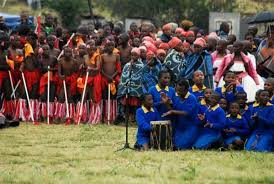

The Morija Heritage and Cultural Festival celebrates the rich cultural history of the Basotho people. Morija is one of the oldest cultural centres in Lesotho and its known for its museums, historical buildings and artistic heritage.
The festival promotes cultural preservation while also suppporting tourism development and local businesses in the country.
The Morija Arts and Cultural Festival is one of the biggest cultural events in Lesotho. It celebrates Basotho heritage through music, dance, poetry, crafts and traditional food